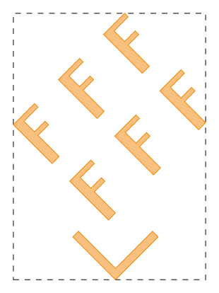
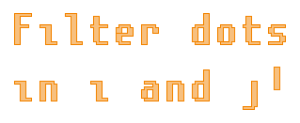
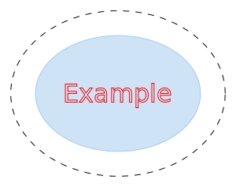

gdstk.Cell
- class gdstk.Cell(name)
Cell structure.
A cell is a fundamental structure in the layout. It stores the geometry, labels and references that make up the final layout. A single library can contain any number of independent cells, which can, themselves, contain references to other cells in the form of
gdstk.Reference.- Parameters:
name (str) – Cell name. It must be ASCII encoded and unique within a library.
Methods
add(*elements)Add polygons, paths, labels and references to this cell.
area([by_spec])Calculate the area of this cell.
Calculate the cell bounding box.
Calculate the convex hull of the cell.
copy(name[, translation, rotation, ...])Create a copy of this cell.
delete_property(name)Delete the first property of this element matching a name.
dependencies([recursive])List of cells and raw cells that are referenced by this cell.
filter(spec[, remove, polygons, paths, labels])Remove elements from this cell based on their layer and data/text type.
flatten([apply_repetitions])Transform all references into polygons, paths and labels.
get_labels([apply_repetitions, depth, ...])Return a copy of all labels in the cell.
get_paths([apply_repetitions, depth, layer, ...])Return a copy of all paths in the cell.
get_polygons([apply_repetitions, ...])Return a copy of all polygons in the cell.
get_property(name)Return the values of the first property of this element matching a name.
remap(layer_type_map)Remap layers and data/text types for all elements in this cell.
remove(*elements)Remove polygons, paths, labels and references from this cell.
set_property(name, value)Set a property for this element.
write_svg(outfile[, scaling, precision, ...])Export this cell to an SVG image file.
Attributes
List of cell labels.
Cell name.
List of cell paths.
List of cell polygons.
Properties of this element.
List of cell references.
- add(*elements) self
Add polygons, paths, labels and references to this cell.
- area(by_spec=False) float or dictionary
Calculate the area of this cell.
- Parameters:
by_spec – If
True, return a dictionary with keys(layer, datatype).- Returns:
Area of the geometry in this cell, optionally indexed by layer and data type.
Notes
This operation can be slow because all paths and references are included in the computation.
- bounding_box() tuple or None
Calculate the cell bounding box.
- Returns:
The lower-left and upper-right corners of the bounding box of the cell:
((min_x, min_y), (max_x, max_y)).
Examples
>>> polygons = gdstk.text("F", 10, (0, 0)) >>> f_cell = gdstk.Cell("F_CELL") >>> f_cell.add(*polygons) >>> ang = numpy.pi / 4 >>> array_ref = gdstk.Reference(f_cell, rotation=ang) >>> array_ref.repetition = gdstk.Repetition(columns=3, rows=2, ... v1=8 * numpy.exp(1j * ang), v2=10j * numpy.exp(1j * ang)) >>> path = gdstk.FlexPath([(-5, 0), (0, -5), (5, 0)], 1, ... simple_path=True) >>> main_cell = gdstk.Cell("MAIN") >>> main_cell.add(array_ref, path) >>> bbox = main_cell.bounding_box() >>> print(bbox) ((-12.816310409006173, -5.707106781186548), (11.313708498984761, 27.66555281392367)) >>> polygon_bb = gdstk.rectangle(*bbox, datatype=1)
Notes
This operation can be slow because all paths and references are included in the computation.
- convex_hull() numpy.ndarray
Calculate the convex hull of the cell.
The convex hull is the smallest convex polygon that contains all elements of the cell.
- Returns:
Vertices of the convex hull.
Examples
>>> polygons = gdstk.text("F", 10, (0, 0)) >>> f_cell = gdstk.Cell("F_CELL") >>> f_cell.add(*polygons) >>> ang = numpy.pi / 4 >>> array_ref = gdstk.Reference(f_cell, rotation=ang) >>> array_ref.repetition = gdstk.Repetition(columns=3, rows=2, ... v1=8 * numpy.exp(1j * ang), v2=10j * numpy.exp(1j * ang)) >>> path = gdstk.FlexPath([(-5, 0), (0, -5), (5, 0)], 1, ... simple_path=True) >>> main_cell = gdstk.Cell("MAIN") >>> main_cell.add(array_ref, path) >>> hull = main_cell.convex_hull() >>> polygon_hull = gdstk.Polygon(hull, datatype=1)
Notes
This operation can be slow because all paths and references are included in the computation.
- copy(name, translation=(0, 0), rotation=0, magnification=1, x_reflection=False, deep_copy=True) gdstk.Cell
Create a copy of this cell.
A transformation can be applied to the contents of the new cell. They follow the same order as reference transformations.
- Parameters:
name (str) – Name of the new cell.
translation (coordinate pair or complex) – Amount to translate the cell contents.
rotation – Rotation angle (in radians).
magnification – Scaling factor.
x_reflection – If
True, the geometry is reflected across the horizontal axis before rotation.deep_copy – If
True, new elements (polygons, paths, references, and labels) are also created for the copied cell. If any transformation is applied, this value is alwaysTrue.
- Returns:
Copy of this cell.
- delete_property(name) self
Delete the first property of this element matching a name.
- Parameters:
name (str) – Property name.
- dependencies(recursive=True) list
List of cells and raw cells that are referenced by this cell.
- Parameters:
recursive – If
True, includes all dependencies recursively.
- filter(spec, remove=True, polygons=True, paths=True, labels=True) self
Remove elements from this cell based on their layer and data/text type.
- Parameters:
spec (iterable of tuples) – Tuples of (layer, data/text type) to remove or to keep in the cell.
remove – If True, shapes whose layer and type specification are in spec will be removed from the cell. If False, only those shapes will be kept, while others will be removed.
polygons – Whether to filter the cell’s polygons.
paths – Whether to filter the cell’s paths.
labels – Whether to filter the cell’s labels.
Examples
>>> # Remove all elements in layer 3, type 10: >>> cell.filter([(3, 10)], True) >>> # Remove all elements except for those on layer 5, type 2: >>> cell.filter([(5, 2)], False)
- flatten(apply_repetitions=True) self
Transform all references into polygons, paths and labels.
- Parameters:
apply_repetitions – Define whether repetitions should be flattened for polygons, paths and labels (reference repetitions are always applied).
Examples
>>> poly1 = gdstk.Polygon([(0, 0), (1, 0), (0.5, 1)]) >>> cell1 = gdstk.Cell('CELL_1') >>> cell1.add(poly1) >>> poly2 = gdstk.Polygon([(1, 0), (1.5, 1), (0.5, 1)], layer=1) >>> ref = gdstk.Reference(cell1) >>> ref.repetition = gdstk.Repetition(columns=2, rows=2, ... spacing=(1, 1)) >>> cell2 = gdstk.Cell('CELL_2') >>> cell2.add(poly2, ref) >>> print(len(cell2.polygons), len(cell2.references), ... len(cell2.dependencies(True))) 1 1 1 >>> cell2.flatten() >>> print(len(cell2.polygons), len(cell2.references), ... len(cell2.dependencies(True))) 5 0 0
- get_labels(apply_repetitions=True, depth=None, layer=None, texttype=None) list
Return a copy of all labels in the cell.
- Parameters:
apply_repetitions – Define whether repetitions should be applied in the created labels.
depth – If non negative, indicates the number of reference levels processed recursively. A value of 0 will result in no references being visited. A value of
None(the default) or a negative integer will include all reference levels below the cell.layer – If set, only labels in the defined layer and text type are returned.
texttype – If set, only labels in the defined layer and text type are returned.
Notes
Arguments
layerandtexttypemust both be set to integers for the filtering to be executed. If either one isNonethey are both ignored.
- get_paths(apply_repetitions=True, depth=None, layer=None, datatype=None) list
Return a copy of all paths in the cell.
- Parameters:
apply_repetitions – Define whether repetitions should be applied in the created paths.
depth – If non negative, indicates the number of reference levels processed recursively. A value of 0 will result in no references being visited. A value of
None(the default) or a negative integer will include all reference levels below the cell.layer – If set, only paths in the defined layer and data type are returned.
datatype – If set, only paths in the defined layer and data type are returned.
Notes
Arguments
layeranddatatypemust both be set to integers for the filtering to be executed. If either one isNonethey are both ignored.
- get_polygons(apply_repetitions=True, include_paths=True, depth=None, layer=None, datatype=None) list
Return a copy of all polygons in the cell.
- Parameters:
apply_repetitions – Define whether repetitions should be applied in the created polygons.
include_paths – If
True, polygonal representation of paths are also included in the result.depth – If non negative, indicates the number of reference levels processed recursively. A value of 0 will result in no references being visited. A value of
None(the default) or a negative integer will include all reference levels below the cell.layer – If set, only polygons in the defined layer and data type are returned.
datatype – If set, only polygons in the defined layer and data type are returned.
Notes
Arguments
layeranddatatypemust both be set to integers for the filtering to be executed. If either one isNonethey are both ignored.
- get_property(name) list
Return the values of the first property of this element matching a name.
- Parameters:
name (str) – Property name.
- Returns:
List of property values. If no property is found,
Noneis returned.- Return type:
list or None
- labels
List of cell labels.
Notes
This attribute is read-only.
- name
Cell name.
- paths
List of cell paths.
Notes
This attribute is read-only.
- polygons
List of cell polygons.
Notes
This attribute is read-only.
- properties
Properties of this element.
Properties are represented as a list of lists, each containing the property name followed by its values.
- references
List of cell references.
Notes
This attribute is read-only.
- remap(layer_type_map) self
Remap layers and data/text types for all elements in this cell.
- Parameters:
layer_type_map – Dictionary mapping existing (layer, type) tuples to desired (layer, type) tuples.
Notes
References in this cell are not affected. To remap those, loop over them with get_dependencies. To remap a whole libarry, use Library.remap.
- remove(*elements) self
Remove polygons, paths, labels and references from this cell.
Examples
>>> polygons = gdstk.text("Filter dots\nin i and j!", 8, (0, 0)) >>> cell = gdstk.Cell("FILTERED") >>> cell.add(*polygons) >>> dots = [poly for poly in cell.polygons if poly.area() < 2] >>> cell.remove(*dots)
- set_property(name, value) self
Set a property for this element.
The property name does not have to be unique. Multiple properties can have the same name.
- Parameters:
name (str) – Property name.
value (str, bytes, number, or sequence of those) – Values associated with the property.
Notes
These properties can be used to associate custom metadata with an element, but general properties are not supported by GDSII files, only OASIS. Use the specific methods to access GDSII properties.
- write_svg(outfile, scaling=10, precision=6, shape_style=None, label_style=None, background='#222222', pad='5%', sort_function=None) self
Export this cell to an SVG image file. Colors and attributes must follow SVG specification.
- Parameters:
outfile (str or pathlib.Path) – Name of the output file.
scaling – Scaling factor for the whole geometry.
precision (positive integer) – Maximum number of digits for coordinates after scaling.
shape_style (dict) – SVG attributes for each layer and data type.
label_style (dict) – SVG attributes for each layer and text type.
background (str) – Image background color.
pad (number, str) – Viewport margin around the image content. It can be specified as an absolute dimension or a percentage of the largest image dimension.
sort_function (callable) – If set, the polygons on each cell will be sorted according to this function. It must accept 2 polygons and return
Trueif the first one is below the second.
Notes
Labels in referenced cells will be affected by the the reference transformation, including magnification.
Examples
>>> # (layer, datatype) = (0, 1) >>> poly1 = gdstk.ellipse((0, 0), (13, 10), datatype=1) >>> # (layer, datatype) = (1, 0) >>> poly2 = gdstk.ellipse((0, 0), (10, 7), layer=1) >>> (layer, texttype) = (3, 2) >>> label = gdstk.Label("Example", (0, 0), layer=3, texttype=2) >>> cell = gdstk.Cell("SVG") >>> cell.add(poly1, poly2, label) >>> cell.write_svg( ... "example.svg", ... background="none", ... shape_style={(0, 1): {"fill": "none", ... "stroke": "black", ... "stroke-dasharray": "8,8"}}, ... label_style={(3, 2): {"fill": "none", ... "stroke": "red", ... "font-size": "32px"}}, ... pad="5%", ... sort_function=lambda p1, p2: p1.layer < p2.layer, ... )